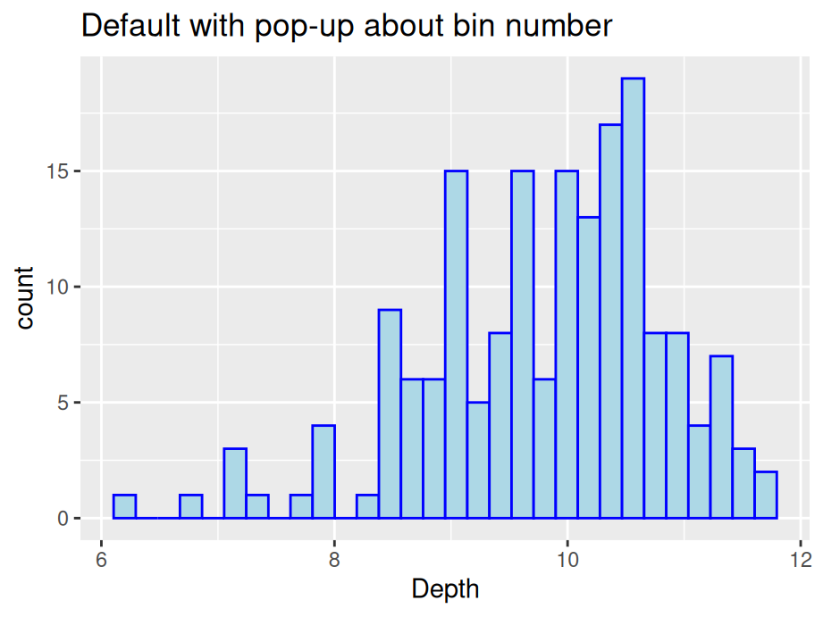

Chapter 4 Unidimensional Continuous Variables
In this chapter, we will demonstrate graphs with unidimensional continuous variables only using ggplot2.
4.1 Histogram
4.1.1 Basics and implications
We will start with an easy example.
library(ggplot2)
library(gridExtra)
#Example data
x <- c(50, 51, 53, 55, 56, 60, 65, 65, 68)
#Stored as a dataframe
df <- data.frame(x)
ggplot(df, aes(x)) +
geom_histogram(color = "blue", fill = "lightBlue",
binwidth = 5, center = 52.5) +
ggtitle("ggplot2 histogram of x")In this example, we used geom_histogram to create a histogram on variable x. We can see that it is quick to make and does not need much pre-processing. Moreover, Histograms show data’s empirical distribution within a set of intervals and we suggest using it as a one of the first steps to understand your data.
Note: as shown above, ggplot expects a dataframe, so make sure you do not throw a vector into ggplot.
4.1.2 Types of Histograms
The y-scale of histograms can be represented in a variety of ways to express different results:
- Frequency or count: y = number of values that fall in each bin
- Relative frequency: y = number of values that fall in each bin / total number of values
- Cumulative frequency: y = total number of values <= (or <) right boundary of bin
- Density: y = relative frequency / binwidth
4.1.3 Parameters for geom_histogram
4.1.3.1 Bin boundaries
Be mindful of the boundaries of the bins and whether a point will fall into the left or right bin if it is on a boundary. You can use the parameter closed to control the intervals.
p1 <- ggplot(df, aes(x)) +
geom_histogram(color="blue",fill="lightblue",
binwidth = 5, center = 52.5, closed="left") +
ggtitle("Left Closed graph")
p2 <- ggplot(df, aes(x)) +
geom_histogram(color="blue",fill="lightblue",
binwidth = 5, center = 52.5, closed="right") +
ggtitle("Right Closed graph")
grid.arrange(p1, p2, ncol = 2)
4.1.3.2 Bin numbers
library(Sleuth3)
finches <- Sleuth3::case0201
#Default / Only adding some styles to make graph consistent
ggplot(finches, aes(x = Depth)) +
geom_histogram(color="blue",fill="lightblue") +
ggtitle("Default with pop-up about bin number")
We start by passing no parameters into geom_histogram and you will notice a pop-up saying that the default number of bins is 30.
We see that the graph is not ideal with some gaps. There are two ways to modify the number of bins: specify the width explicitly with binwidth or provide the desired number of bins with bins. Consider the following modifications:
# using binwidth
p3 <- ggplot(finches, aes(x = Depth)) +
geom_histogram(color="blue",fill="lightblue",
binwidth = 0.5, boundary = 6) +
ggtitle("Changed binwidth value")
# using bins
p4 <- ggplot(finches, aes(x = Depth)) +
geom_histogram(color="blue",fill="lightblue",
bins = 15, boundary = 6) +
ggtitle("Changed bin value")
# format plot layout
grid.arrange(p3, p4, ncol = 2)
Note: There is no gold standard on the number of bins, so try different numbers to generate best results.
4.1.3.3 Bin alignment
Consider this comparison
p5 <- ggplot(finches, aes(x = Depth)) +
geom_histogram(color="blue",fill="lightblue",binwidth = 0.5) +
ggtitle("Without alignment")
p6 <- ggplot(finches, aes(x = Depth)) +
geom_histogram(color="blue",fill="lightblue",bins = 15, boundary = 6) +
ggtitle("With alignment")
grid.arrange(p5, p6, ncol = 2)
Notice that the boundary of bins does not start at an axis and the only difference in the code is the removal of boundry. To control the position of bins, we can use either parameter center or boundary. You can use boundary to specify the endpoint of any bin or center to specify the center of any bin and ggplot2 will be able to calculate where to place the rest of the bins. (Also, notice that when the boundary was changed, the number of bins got smaller by one. This is because by default the bins are centered and go over/under the range of the data.) In the above example, we specify boundary to be 6. We can see the first bin starts at 6 and the position of other bins are calculated based on the binwidth 0.5.
4.1.4 Interactive histograms with ggvis
The ggvis package is not currently in development, but does certain things very well, such as adjusting parameters of a histogram interactively while coding. If you are interested, refer here.
4.2 Boxplot
4.2.1 Single Boxplot
A boxplot is one of the simplest ways of representing a distribution of a continuous variable (Never use boxplots for categorical data). It consists of two parts: box and whiskers. Let’s starting with a simple example: single boxplot.
library(datasets)
ggplot(Orange, aes(x=circumference))+
geom_boxplot()+
ggtitle("Boxplot of circumference")
Here as you can see, boxplots provide a ton of information for a single chart. Boxplots tell you whether the variable is normally distributed, or if the distribution is skewed in either direction. You can also easily spot the outliers, which always helps.
4.2.2 Multiple boxplots
Next, what if you want to compare the distributions between multiple classes? Here, you can create a multiple boxplot. But remember, your data frame needs to be tidy, that is you need to have a column with levels of the grouping variable. It can be be factor, character, or integer class.
The following example still use the Orange dataset. We compare the distributions of circumference between different Tree(which indicates the tree types with ordering of max diameter).
ggplot(Orange, aes(x=reorder(Tree, -circumference, median),y=circumference))+
geom_boxplot()+
ggtitle("Multiple boxplots of circumference of different types of Trees")+
labs(y="Circumference at Breast Height", x="Tree with ordering of max diameter")
Note. Usually in a boxplot, the boxes should be reordered so that there will be a decreasing order of the class medians from left to right.
Often you want boxplots to be horizontal. Super easy to do in ggplot2: just tack on + coord_flip() and remove the - from the reordering so that the factor level with the highest median will be on top:
ggplot(Orange, aes(x=reorder(Tree, circumference, median),y=circumference))+
geom_boxplot()+
coord_flip()+
ggtitle("Multiple boxplots of circumference of different types of Trees")+
labs(y="Circumference at Breast Height", x="Tree with ordering of max diameter")
4.3 Ridgeline plot
4.3.1 Basics and implications
Ridgeline plots can be used when a number of data segments have to be plotted on the same horizontal scale. It is presented with slight overlap. Ridgeline plots are very useful to visualize the distribution of a categorical variable over time or space.
A good example using ridgeline plots will be a great example is visualizing the distribution of salary over different departments in a company.
Consider the following example:
library(ggridges)
library(forcats)
ggplot(Orange, aes(x=circumference,y=fct_rev(fct_inorder(Tree)),fill = fct_inorder(Tree))) +
geom_density_ridges() +
scale_fill_brewer(palette = 4) +
scale_y_discrete(expand = c(0.8, 0)) +
scale_x_continuous(expand = c(0.01, 0)) +
ggtitle("Density estimation of circumference of different types of Trees") +
labs(x="Circumference at Breast Height", y="Tree with ordering of max diameter") +
theme_ridges() +
theme(plot.title = element_text(hjust = 0.5), axis.title.x = element_text(hjust=0.5), legend.title = element_blank())
ggridge uses two main geoms to plot the ridgeline density plots: geom_density_ridges and geom_ridgeline. They are used to plot the densities of categorical variable factors and see their distribution over a continuous scale.
4.3.2 Create better visuals
ggplot(Orange, aes(x=circumference,y=fct_rev(fct_inorder(Tree)),fill = fct_inorder(Tree))) +
geom_density_ridges(scale = 2, alpha=0.5) +
scale_fill_brewer(palette = 4) +
scale_y_discrete(expand = c(0.8, 0)) +
scale_x_continuous(expand = c(0.01, 0)) +
ggtitle("Density estimation of circumference of different types of Trees") +
labs(x="Circumference at Breast Height", y="Tree with ordering of max diameter") +
theme_ridges() +
theme(plot.title = element_text(hjust = 0.5), axis.title.x = element_text(hjust=0.5), legend.title = element_blank())
In this example, we added parameter scale and alpha to control overlaps between ridges. Scale defines how much the peak of the lower curve touches the curve above and alpha controls transparency.
4.3.3 Additional Resources
Introduction to ggridges: An excellent collection of code examples on how to make ridgeline plots with
ggplot2. Covers every parameter of ggridges and how to modify them for better visualization. If you want a ridgeline plot to look a certain way, this article will help.Article on ridgeline plots with ggplot2: Few examples using different examples. Great for starting with ridgeline plots.
History of Ridgeline plots: To refer to the theory of ridgeline plots.
4.4 Normal Distribution
When encountering data that seems to be normally distributed, you may want to overlay a normal curve.
There are many ways to draw a normal curve and we introduce one here
ggplot(finches, aes(x = Depth)) +
geom_histogram(aes(y=..density..),color="blue",fill="lightblue",
binwidth = 0.5) +
stat_function(fun=dnorm, col = "red",
args=list(mean(finches$Depth),sd(finches$Depth)))+
ggtitle("Normal curve overlaid")
Notice that the normal curve is not compatiable with facet. Consider the following example

As you might notice, even though a normal curve appears in all of the sections, they are actually the same one and generated on the whole dataset. In such circumstance, we suggest drawing each graph separately and combine them.